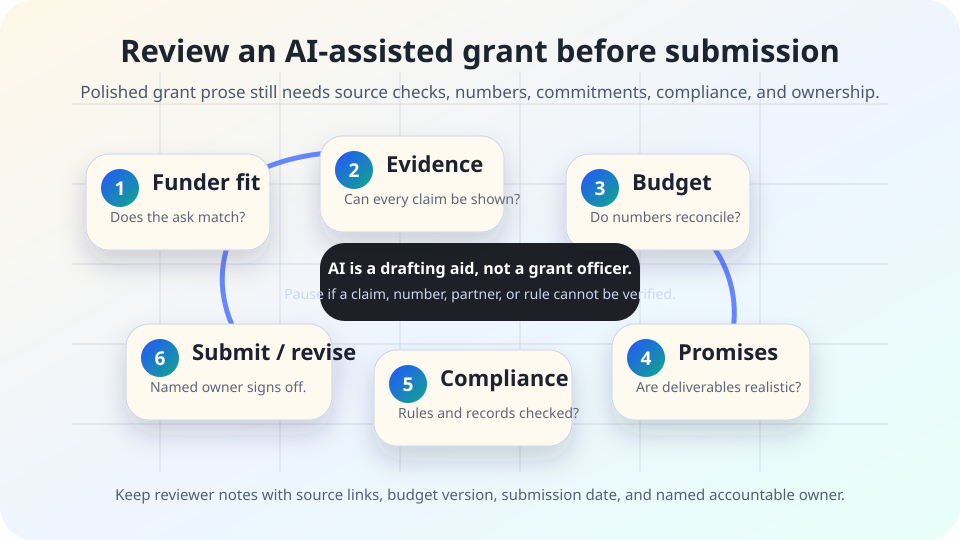

AI governance and grant writing
AI grant application checklist.
A pre-submission review for AI-assisted grant narratives, budgets, work plans, needs statements, partner descriptions, evaluation plans, and compliance language.
The short answer
AI can help organize a grant draft, summarize source material, make language clearer, or turn notes into a first-pass narrative. It should not invent need, inflate impact, smooth over uncertainty, create unsupported partner commitments, or make the budget look aligned when the numbers do not reconcile.
Before submission, a human or accountable team should check funder fit, evidence, budget, commitments, compliance, records, and final ownership. If a claim, number, partner role, or required attachment cannot be verified, pause the application instead of letting polished prose carry the risk forward.

Why this review matters
Federal grant and cooperative-agreement recipients often work under administrative requirements in 2 CFR Part 200, including rules for financial management, internal controls, records, procurement, subawards, cost principles, and audit responsibilities. Grants.gov’s Workspace material describes a structured application process with forms, roles, checks, and submission steps. The U.S. Department of Justice describes the False Claims Act as a civil tool for addressing fraud involving federal funds and programs.
Those sources do not ban careful AI drafting, and this guide is not legal advice. The practical lesson is narrower: AI-assisted grant drafts need disciplined review because a fluent paragraph can hide an unsupported statistic, an impossible timeline, a partner commitment that was never approved, a budget mismatch, or compliance language copied into the wrong context. NIST’s AI Risk Management Framework also points toward governance, mapping, measurement, management, documentation, and accountable roles for AI use.
1. Minimum checks before submission
| Check | Question to answer | Evidence to keep |
|---|---|---|
| Funder fit | Does the project match the notice, eligibility rules, allowed activities, period of performance, geography, population, and deadline? | Opportunity link, notice version, eligibility note, and submission calendar. |
| Source-backed need | Are problem statements, local data, citations, quotes, and community examples current, attributed, and not exaggerated? | Source links, data dates, citation notes, and reviewer role. |
| Budget alignment | Do the narrative, budget form, budget justification, match, indirect costs, staff time, subcontractor costs, and timeline agree? | Budget version, spreadsheet owner, reconciliation note, and approvals. |
| Partner commitments | Did each named partner approve its role, contribution, data-sharing obligation, letter, timeline, and public description? | Letters, emails, memorandum references, or signed approval notes. |
| Deliverables and evaluation | Are outputs, outcomes, metrics, reporting promises, and evaluation methods realistic for the team and budget? | Work plan, metric definitions, baseline sources, and evaluator review where applicable. |
| Compliance and records | Does the draft respect funder instructions, required forms, certifications, records duties, accessibility, privacy, procurement, subaward, and conflict rules? | Compliance checklist, attachment list, and policy/legal/finance review notes where needed. |
| AI-use sign-off | Who used AI, for what drafting tasks, what source material was supplied, what was independently verified, and who owns the final submission? | Short AI-use note, reviewer names or roles, final version hash or file name, and submission receipt. |
2. Treat these grant sections as high-risk
Needs statements
AI may blend real data with general claims. Check every statistic, location, date, quote, population description, and citation.
Budgets and justifications
AI is weak at preserving spreadsheet logic. Reconcile totals, categories, match, staffing assumptions, indirect costs, and narrative promises by hand.
Partner narratives
Do not let AI assign roles, data access, service volume, facilities, matching funds, or public commitments that partners have not approved.
Evaluation plans
Check that outcomes are measurable, baseline data exists, privacy is protected, and reporting can actually be done during the grant period.
Compliance language
Copied boilerplate can be wrong for the funding source. Verify required assurances, certifications, accessibility, procurement, subaward, records, and audit language against the notice and policies.
Equity and community claims
Review language with affected people where possible. Avoid deficit framing, unsupported representation claims, or promising community benefits without a credible plan.
3. A simple review workflow
- Lock the source packet. Save the funding notice, instructions, required forms, budget template, data sources, partner notes, and approved organizational language before drafting.
- Mark AI-assisted sections. Label which sections used AI for brainstorming, outlining, summarizing, rewriting, or formatting so reviewers know where extra verification is needed.
- Review eligibility and instructions first. Confirm the project is eligible and the draft follows the funder’s required order, page limits, attachments, formatting, and submission path.
- Check facts before persuasion. Verify citations, local numbers, quotations, community descriptions, organizational history, dates, and claims before polishing style.
- Reconcile the budget. Compare narrative activities, staffing, partner roles, budget forms, justifications, match, indirect costs, and timeline line by line.
- Confirm commitments. Ask each named owner, partner, finance reviewer, evaluator, and authorized signer to approve the exact commitments attributed to them.
- Keep a clean review record. Preserve the final version, source links, approval notes, submission receipt, and a short note describing how AI was used and checked.
4. Lightweight sign-off log
| Field | What to record |
|---|---|
| Opportunity | Funder, program, opportunity number or URL, deadline, and notice version. |
| AI use | Tool category if known, sections assisted, source material provided, and tasks performed. Do not preserve sensitive prompts unless policy requires it. |
| Verification | Reviewer roles for eligibility, facts, budget, partners, compliance, accessibility, privacy, and final authorization. |
| Open issues | Questions resolved, unresolved uncertainty, changes made after review, and reasons for any accepted risk. |
| Final record | Final file name or version, submission date, submission receipt, and storage location under the organization’s record policy. |
Stop rules
- Pause if the AI draft includes a statistic, law, citation, quote, community claim, or performance number that no one can source.
- Pause if the budget, narrative, attachments, and partner letters describe different work.
- Pause if a partner, evaluator, fiscal sponsor, or authorized signer has not approved the commitment attributed to them.
- Pause if the draft copies compliance language from another opportunity without checking the current notice and applicable policy.
- Pause if the team is using AI with personal, confidential, student, client, patient, donor, personnel, or protected data without an approved privacy basis.
- Proceed only when a named owner can explain what AI helped with, what was independently verified, what assumptions remain, and where the final submission record is kept.
Starter language for internal review
Use this inside the team record, not necessarily in the public proposal unless funder instructions require or allow it:
AI-assisted drafting note: AI was used to help organize and revise selected application text. The project team independently checked eligibility, factual claims, citations, partner commitments, budget alignment, compliance requirements, and final submission materials. The final application is owned by [role/team], not by the AI tool.
Related field guide pages
Sources
- eCFR — 2 CFR Part 200, Uniform Administrative Requirements, Cost Principles, and Audit Requirements for Federal Awards: https://www.ecfr.gov/current/title-2/subtitle-A/chapter-II/part-200
- Grants.gov — Workspace Overview: https://www.grants.gov/applicants/workspace-overview
- U.S. Department of Justice — The False Claims Act: https://www.justice.gov/civil/false-claims-act
- NIST — AI Risk Management Framework: https://www.nist.gov/itl/ai-risk-management-framework
- NIST — Artificial Intelligence Risk Management Framework (AI RMF 1.0): https://nvlpubs.nist.gov/nistpubs/ai/NIST.AI.100-1.pdf
- PlainLanguage.gov — Federal plain language guidelines: https://www.plainlanguage.gov/guidelines/
This page is public education, not legal, accounting, grant-management, or compliance advice. Follow the funder notice, organizational policy, and qualified professional review where needed.